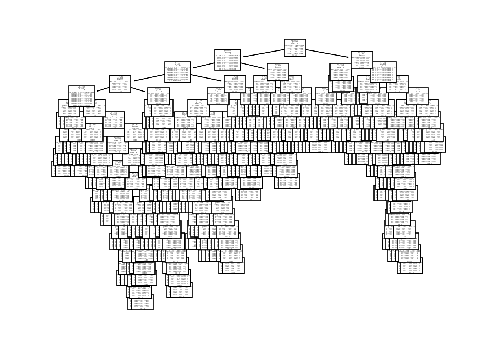

Code
library(reticulate)
use_python("/Users/bevanwatson/Desktop/SPRING2024/MATH378/Final_Project/venv/bin/python", required = TRUE)from palmerpenguins import penguins
from pandas import get_dummies
import numpy as np
from sklearn.linear_model import LinearRegression
from sklearn import preprocessing
from vetiver import VetiverModel
from pins import board_folder
from vetiver import vetiver_pin_write
import duckdb
from palmerpenguins import penguins
from vetiver import VetiverAPI
from sklearn.preprocessing import LabelEncoder
from sklearn.linear_model import LogisticRegression
import matplotlib.pyplot as plt
from sklearn.model_selection import train_test_split
from sklearn.tree import DecisionTreeClassifier
from sklearn.metrics import accuracy_score, precision_score, recall_score
from sklearn.impute import SimpleImputer
from sklearn.tree import plot_tree
from sklearn.metrics import mean_squared_error, r2_score species island bill_length_mm ... body_mass_g sex year
0 Adelie Torgersen 39.1 ... 3750.0 male 2007
1 Adelie Torgersen 39.5 ... 3800.0 female 2007
2 Adelie Torgersen 40.3 ... 3250.0 female 2007
[3 rows x 8 columns]<class 'pandas.core.frame.DataFrame'>
Index: 333 entries, 0 to 343
Data columns (total 8 columns):
# Column Non-Null Count Dtype
--- ------ -------------- -----
0 species 333 non-null object
1 island 333 non-null object
2 bill_length_mm 333 non-null float64
3 bill_depth_mm 333 non-null float64
4 flipper_length_mm 333 non-null float64
5 body_mass_g 333 non-null float64
6 sex 333 non-null object
7 year 333 non-null int64
dtypes: float64(4), int64(1), object(3)
memory usage: 23.4+ KBLinearRegression()In a Jupyter environment, please rerun this cell to show the HTML representation or trust the notebook.
LinearRegression()
LinearRegression()In a Jupyter environment, please rerun this cell to show the HTML representation or trust the notebook.
LinearRegression()
LinearRegression()In a Jupyter environment, please rerun this cell to show the HTML representation or trust the notebook.
LinearRegression()
LinearRegression()In a Jupyter environment, please rerun this cell to show the HTML representation or trust the notebook.
LinearRegression()
LinearRegression()In a Jupyter environment, please rerun this cell to show the HTML representation or trust the notebook.
LinearRegression()
LinearRegression()In a Jupyter environment, please rerun this cell to show the HTML representation or trust the notebook.
LinearRegression()
LinearRegression()In a Jupyter environment, please rerun this cell to show the HTML representation or trust the notebook.
LinearRegression()
DecisionTreeClassifier(random_state=28)In a Jupyter environment, please rerun this cell to show the HTML representation or trust the notebook.
DecisionTreeClassifier(random_state=28)

##Note to grader: HATGPT WROTE THIS
def fit_and_evaluate(X, y):
X_train, X_test, y_train, y_test = train_test_split(X, y, test_size=0.2, random_state=28)
model = LinearRegression()
model.fit(X_train, y_train)
y_pred = model.predict(X_test)
return {
'r2_score': r2_score(y_test, y_pred),
'mse': mean_squared_error(y_test, y_pred),
'intercept': model.intercept_,
'coefficients': model.coef_,
'columns': X.columns
}
# Feature sets for different models
features = [
['bill_length_mm', 'bill_depth_mm', 'flipper_length_mm', 'species', 'sex'],
['bill_length_mm', 'flipper_length_mm', 'species', 'sex'],
['bill_length_mm', 'bill_depth_mm', 'species', 'sex'],
['bill_depth_mm', 'flipper_length_mm', 'sex'],
['bill_length_mm', 'species', 'sex'],
['bill_depth_mm', 'species', 'sex'],
['bill_depth_mm', 'species', 'sex'] # Note this is duplicated
]
# Dictionary to store results
results = {}
# Evaluate each model based on its feature set
for i, feature_set in enumerate(features):
X = get_dummies(df[feature_set], drop_first=True)
y = df['body_mass_g']
results[f'Model_{i+1}'] = fit_and_evaluate(X, y)
# Print results for each model
for model_name, stats in results.items():
print(f"{model_name} Results:")
print(f"R^2 Score: {stats['r2_score']}")
print(f"MSE: {stats['mse']}")
print(f"Intercept: {stats['intercept']}")
print("Coefficients:")
for coeff, col in zip(stats['coefficients'], stats['columns']):
print(f" {col}: {coeff}")
print("\n")Model_1 Results:
R^2 Score: 0.8446155529479858
MSE: 84833.32268361608
Intercept: -1027.1947072313533
Coefficients:
bill_length_mm: 17.907273492519597
bill_depth_mm: 51.739542862542045
flipper_length_mm: 15.06888617639644
species_Chinstrap: -271.44037575610037
species_Gentoo: 995.7001051746752
sex_male: 450.9035466603241
Model_2 Results:
R^2 Score: 0.8318461444835685
MSE: 91804.87852007763
Intercept: -458.8394808731773
Coefficients:
bill_length_mm: 19.959457011671088
flipper_length_mm: 16.50456015346535
species_Chinstrap: -298.34720722954455
species_Gentoo: 760.2771681440994
sex_male: 512.7508044035758
Model_3 Results:
R^2 Score: 0.8256032428453429
MSE: 95213.23823178277
Intercept: 1181.3153787684755
Coefficients:
bill_length_mm: 24.706823673018295
bill_depth_mm: 71.60505782990896
species_Chinstrap: -254.83293628617764
species_Gentoo: 1413.778098596855
sex_male: 501.06234411712535
Model_4 Results:
R^2 Score: 0.780424039641849
MSE: 119879.1684240605
Intercept: -1556.624178956853
Coefficients:
bill_depth_mm: -103.45592196022228
flipper_length_mm: 35.99671649057721
sex_male: 611.9601726572607
Model_5 Results:
R^2 Score: 0.8045721407258517
MSE: 106695.32866196366
Intercept: 2300.0173275129473
Coefficients:
bill_length_mm: 28.58538103400707
species_Chinstrap: -291.2116972247329
species_Gentoo: 1132.8116122684078
sex_male: 596.7707525507082
Model_6 Results:
R^2 Score: 0.8152052020630666
MSE: 100890.12781562234
Intercept: 1918.581432563627
Coefficients:
bill_depth_mm: 81.88565966828719
species_Chinstrap: -10.609115129459951
species_Gentoo: 1658.3504593526104
sex_male: 571.5940574281404
Model_7 Results:
R^2 Score: 0.8152052020630666
MSE: 100890.12781562234
Intercept: 1918.581432563627
Coefficients:
bill_depth_mm: 81.88565966828719
species_Chinstrap: -10.609115129459951
species_Gentoo: 1658.3504593526104
sex_male: 571.5940574281404Model Cards provide a framework for transparent, responsible reporting.
Use the vetiver `.qmd` Quarto template as a place to start,
with vetiver.model_card()
Writing pin:
Name: 'penguin_model'
Version: 20240425T235712Z-f5d2c